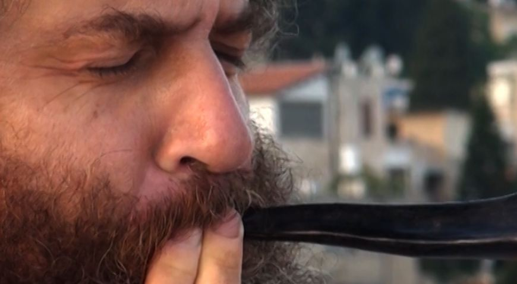
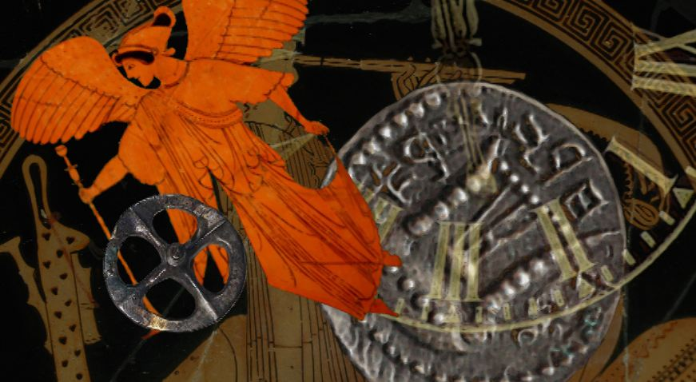
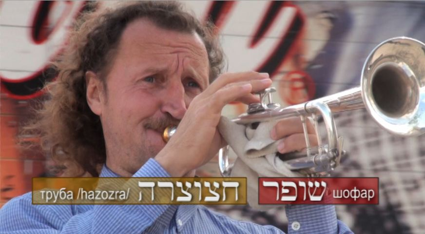
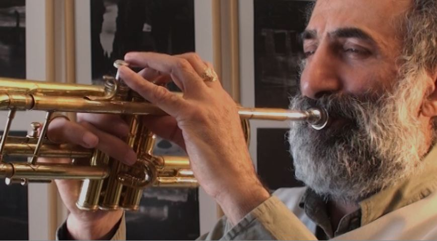
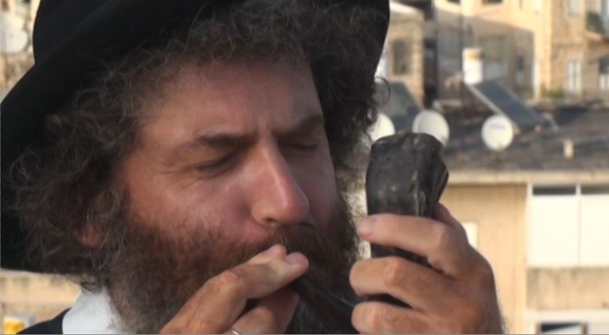

The Voice of the Shofar, Part 1. A High Calling
This midrash is devoted to one of the most important symbols of the Jewish tradition, the shofar. Time has no power over the shofar. Without losing anything of its relevance, this instrument keeps its high calling to this day.
A high calling
The first time our fathers heard the shofar calling out from heaven was in the Sinai desert. Ever since, its amazing voice has accompanied Israel in all the countries where the Jewish people have been scattered. Again and again, for more than three thousand years, Jews in synagogues around the world have been blowing the horn of a sacrificial animal, fulfilling the commandment of the Most High about the Feast of Blowing.
(The literal wording is זכרון תרועה (Heb. zikhron teruah), a remembrance of the blowing of the shofar (Lev 23:24), or יום תרועה (Heb. yom teruah), a day of blowing the shofar (Num 29:1).)
Ever since Yuval (Jubal) (Gen 4:17–21), the son of Lemekh, the son of Metushael, the son of Mehuyael, the son of Irad, the son of Hanokh, the son of Cain, the son of Adam, became the father of all who play the harp and flute, the creative genius of his descendants has given birth to many musical instruments. For thousands of years skilled craftsmen have laboured to find the harmony that Adam lost in Paradise and to embody it in perfect and ingenious instruments. Their construction grew more complex, technologies changed, new materials came into use, and even electricity…
Yet the shofar, once revealed to Avraham, remains unchanged. Its shape and construction are unchanged, and so is its piercing voice, crying out, calling, bearing good news.
The shofar and the silver trumpets. The essential differences between them
However, you will not find an instrument called the shofar in your Bible. In most translations, unlike the Hebrew original, it has been replaced by the word "trumpet". So no distinction is made between a silver trumpet and a horn for blowing taken from a sacrificial animal. In the original text they are the hatsotsra and the shofar.
No doubt there is a certain likeness between these two instruments: one might say that both the horn and the silver trumpet carry something personal in them. It lies in the very sound these wind instruments produce. Air that has just filled a man's lungs and was part of him passes through the bell and becomes a voice that carries his feelings, emotions and thoughts…
But there are much more essential differences between them. "Make thee two trumpets of silver; of a whole piece shalt thou make them," God commanded Moshe (Num 10:1–11).



The illustrations are stills from the film "The Voice of the Shofar".
— The shofar is an instrument that, in a certain sense, was created by God Himself.
— The silver trumpets are laborious, skilful work of human hands.
— The shofar is clean by definition, since it is taken from a clean animal dedicated as a burnt offering, that is, belonging wholly to the LORD.
— Silver must be smelted and refined from impurities, and only then does it become perfect and pure. To stand before the Most High, a man must be refined like the silver of the trumpet. In a certain sense the trumpet represented man before the Creator.
If we speak of a musical instrument that would represent God, it is undoubtedly the shofar.
The Creator addresses His people by blowing the shofar, that is, through the prism of sacrifice, since the shofar is the horn of a sacrificial animal.
Wherever the voice of the shofar is mentioned, it is always in the singular, pointing to the Creator, who is One. Everywhere in Scripture the voice of the shofar is singular, no matter how many shofars are being blown.
In the phrase kol ha-shofar, the voice of the shofar (קול השופר), the word "shofar" takes the definite article "ha". This definite article points to an instrument that is one of a kind: that very shofar sounding from heaven, ha-shofar.

And while we usually meet the word shofar in the singular, the word hatsotsrot (silver trumpets) is used only in the plural. There are two exceptions: the seven shofars at the fall of Jericho under Yehoshua, and the three hundred in the battle led by Gidon.



The different names of the horn
In the original text of the Bible, in ancient Hebrew, the horn as a musical instrument has three different names: keren, shofar and yovel.
It is a well-known phenomenon that one and the same reality has several different names in Scripture. God Himself calls Himself by many names, each of which reveals His character.
In Hebrew a human being also has several names. A man, for example, has four:
— גֶבֶר (Heb. gever), a man, strong and brave: this points to his function and responsibility;
— אִיש (Heb. ish), meaning a person, one who has character, will and feelings;
— בֶּן אָדָם (Heb. ben adam), a son of the one whom the Creator formed from dust;
— זָכָר (Heb. zakhar), from the word "to remember", that is, one who carries in himself the inherited memory of the Father, the Maker.
In general the most common name of the blowing horn is used, the shofar. But in particular situations Scripture calls the shofar by different names, so as to reveal more fully certain of its properties, the nature of its action and its message.
When two or even all three names of the horn appear in the same episode of Scripture, this points to a special action of the shofar, in cases where complex supernatural processes take place at the same time, and each name reaches its own goal while acting in unity and harmony with the others.
See also my film "The Voice of the Shofar". Studio TORAART. Composer Daniel Kruglov.
In the next article we will look at the first of the mysterious names of the shofar, keren: the name of the sounding horn that speaks to every person.
See also the other parts:
— Part 2
— Part 3
— Part 4
— Part 5
***
More video on keeping the commandment of blowing the shofar: see here and here.
Author: Ephraim Kalish / TORAART
 The Voice of the Shofar, Part 4. Yovel: the Jubilee
The Voice of the Shofar, Part 4. Yovel: the Jubilee